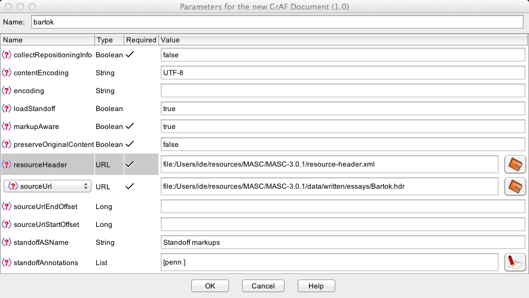
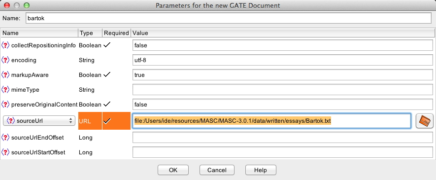
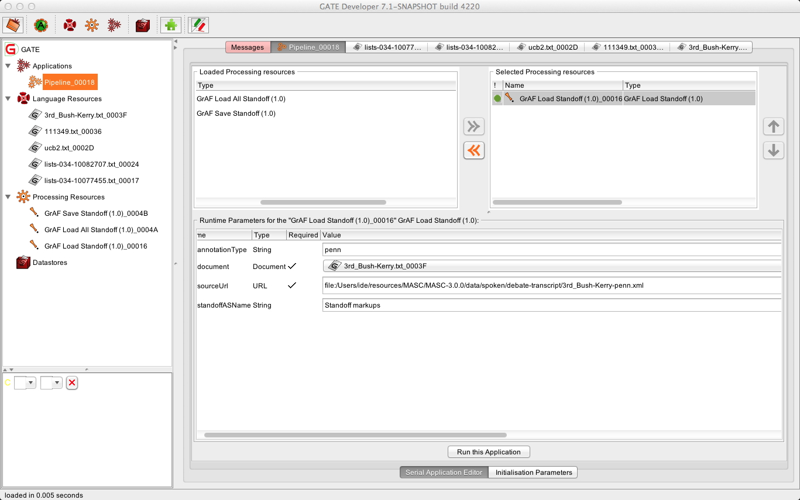
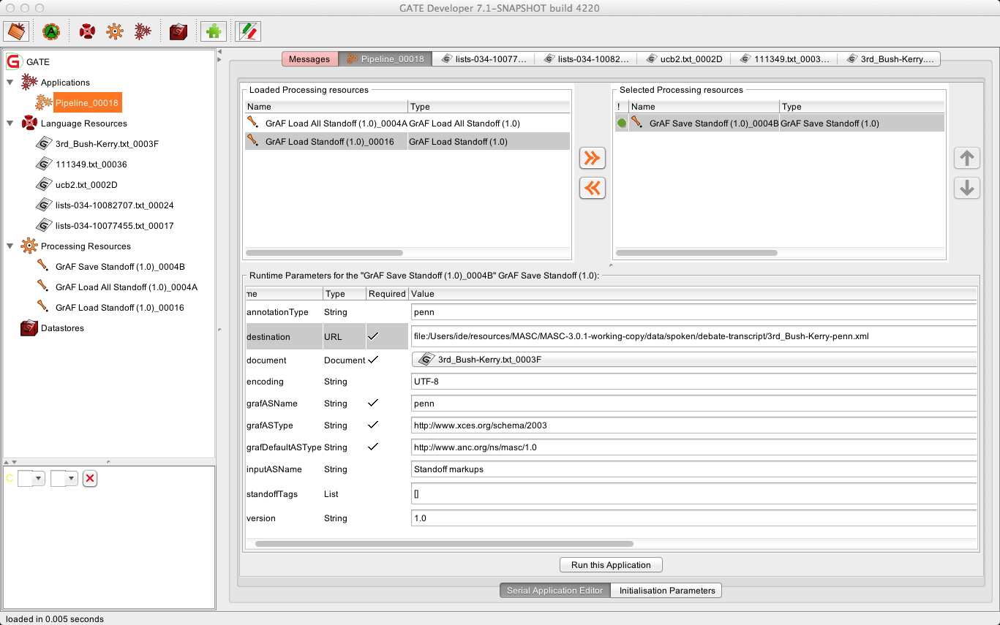

Installing Gate
First download GATE. It is recommeneded that you use either the Windows or MAC OSX installers or the generic installer (an executable jar file). Run the installer and follow the on screen instructions. The remainder of this page uses the symbol $GATE_HOME to refer to the directory where you installed GATE.
GATE requires that you have Java installed. NOTE: Most Windows computers do not come with Java pre-installed. If you are not sure what version of Java is installed on your computer open a command prompt (shell) and type the command:
java -version
If you get a command not found error, or if the version of Java installed is 1.4 or older you will need to download the latest Java version from Sun Microsystems. Be sure to download the Java JDK and not the Java JRE.
Installing the GrAF tools for GATE
The ANC now maintains a GATE plugin repository. See the GATE documentation for instructions on installing plugins from a plugin repository. The ANC’s repository is located at http://www.anc.org/tools/gate/gate-update-site.xml
More information on the Gate tools can be found here.
Annotation Types
There are several annotation types distributed with OANC and MASC data. All data have the following annotations:
| Type | Description |
|---|---|
| logical | The logical structure of the document down to the paragraph level. These annotations are required to convert the document into a well-formed XML file. |
| s | Sentence boundary annotations |
| penn | Penn part of speech tags generated by a modified version of the ANNIE POS Tagger in GATE |
| nc | Noun chunks |
| vc | Verb chunks |
| ne | Named entities |
The type indicator associated with each annotation type is an id defined in the resource header distributed with each corpus, used in filenames and annotation spaces etc. in the corpus.
Notes :
- Some OANC files include token annotations with part of speech tags generated by the Biber tagger. These annotations can be accessed within GATE in the same way as the core set by using the type indicator “biber”.
- MASC includes several annotation types beyond this core set on some of its files; the MASC resource header (included with the distribution) provides the type associated with each. See also the description of the MASC structure for a complete list of annotation types in MASC. These additional annotations can be accessed within GATE in the same way as the core set by using the associated type indicator.
Loading a GrAF Document
Method 1 (preferred)
Select GrAF Document under New Language Resource. The new document dialog will open. Fill in the following fields:
- Name: you can name the document anything you want, although using the file name is likely a good idea. This is simply a human readable name you assigned to the document inside GATE. If nothing is entered, GATE assigns the filename with a numeric suffix for internal bookkeeping purposes.
- resourceHeader: navigate to the resource header file for OANC or MASC as appropriate (in the top-level data directory), and select it.
- sourceURL: navigate to the desired document’s header file, which os the filename with extension .hdr (only documents with .hdr extensions should be highlighted on the selection list) and select it.
- standoffAnnotations: This is a list of the annotation types to be included in the document. Click the list icon to open the List dialog and enter the annotation types to include, click the Add button and then the Ok button to close the dialog.
- standoffASName: (optional) this is the name of the annotation set that the standoff annotation will be added to. You can leave this as the default or change it to something else. This is useful if you will be loading several sets of standoff annotations and want to keep them separate.

Method 2 (alternate)
If, for some reason, the above method does not work you can load the text file for the document directly. Create a GATE Document (File -> New language resource -> Gate document) and select the text file (with the.txt extension) as the sourceUrl. The New Gate documet dialog is similar to the the new GrAF document dialog, minus the fields for the standoff annotations, and you fill it in the same way. However, you must specify the encoding to be UTF-8. Once the text has been loaded follow the instructions below to load any standoff annotations.

Loading Additional Standoff Annotations
Before loading additional standoff annotations some initial set up will have to be done. However, this typically only has to be done once.
1. Create a Processing Resource (PR). Select New Processing Resource -> GrAF Load Standoff to load an individual annotation file, or Select New Processing Resource -> GrAF Load All Standoff to load all standoff annotations for a document. Enter a name for the PR (Load Standoff say) and click the OK button. The Load Standoff (or Load All Standoff) PR should appear in the left hand panel under Processing Resources.
2. Create a GATE Application.
- To load annotations for a single document, select New Application -> Pipeline. Enter a name for the application (say, Load Standoff) and click the OK button. The new pipeline should appear in the left hand panel under Applications.
- To load annotations for a set of documents that are part of a GATE Corpus, select New Application -> Corpus Pipeline and then follow the same procedure.
3. Configure and run the application.
- Double click on the Load Standoff application in the left panel. This will open the Application Editor in the main window.
- Select the Load Standoff PR in the list of Loaded Processing Resources and click on the right arrow to move it to the list of Selected Processing resources.
- Click on the Load Standoff PR in the list of Selected Processing Resources to open the PR parameter editor in the bottom of the main window.
- Select the document (or corpus, if applicable) you would like to add the standoff annotations to.
- In the annotationType box, enter the annotation type that you want to load. Note that annotation files that are required for another annotation type are automatically loaded when the dependent annotation type is give. For example, the ptb (Penn Treebank Syntax) annotations require the ptbtok (Penn Treebank tokens with part of speech); if ptb is specified as the annotation type to load, ptbtok annotations are automatically loaded as well.
- Click the folder icon next to the sourceUrl field and navigate to the standoff annotation file you would like to add. Unlike opening an GrAF Document, where you select the .hdr header file, when loading standoff annotations separately you must select the XML standoff annotation file directly. Each annotation file name includes a -xx.xml suffix, where “xx” (may be longer than two characters) is the annotation type indicator for the contained annotation type.
- Set the standoffASName (optional). This is the name of the annotation set that the standoff annotations will be added to. In the image below, the tokens with lemma and Penn part of speech tags annotations (-penn.xml suffix) are added to the Standoff markups annotation set. If an annotation set with the specified name already exists, the new annotations will be added to the existing set; otherwise a new annotation set with that name will be created.
- Steps 4 – 7 can be repeated as desired.

Saving GrAF Standoff Annotations
The procedure for saving standoff annotations in GrAF format is the same as the procedure for loading standoff annotations:
- Create a processing resource. This time you will create an GrAF Save Standoff processing resource.
- Create a GATE application and add the Save Standoff PR to the new application.
- Configure the processing resource and run the application. The following fields need to be completed in the Save Standoffprocessing resource.
- annotationType: Enter the annotation type that you want to save. The name in this field will appear as a suffix to the name of the resulting GrAF XML file. In the example below, the resulting filename will be bartok-standoff.xml.
- destination – This is the location where the standoff annotation file will be saved. If the file does not exist, navigate to and choose the folder in which you want the file to be written. Otherwise, choose an existing file as the destination.
- document – Name of the document containing the annotations to be saved. The drop down box will contain a list of all the open documents.
- inputASName – Name of the annotation set containing the annotations to be saved.
- standoffTags – A list of the annotations that will be saved. If left blank all the annotations in the selected annotation set will be saved.

Gate Tips
- Be sure to specify UTF-8 as the encoding type when opening the text files directly.
- When exiting GATE, be sure to select Exit Gate from the File menu. Otherwise, GATE will not save its current state information andrestore open applications, documents, or processing resources the next time it i started up.
- Do not use files in a location with a space anywhere in the path, as GATE has problems with this format.
- If something does not work, check for error messages in GATE’s Message tab.
- If you get an error stating that no standoff annotations were found when running the SaveStandoff processing resource, the most likely causes are that you specified the name of the annotation set incorrectly, or you specified the standoff tags incorrectly. Both values are case sensitive.